|
| A B C D E F G H I J K L M N O P Q R S T U V W X Y Z |
Torah, 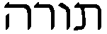 (cf. Hiph. of 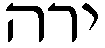), signifies first "direction, instruction", as, for instance, the instruction of parents (Proverbs 1:8), or of the wise (Proverbs 3:1). It is used chiefly in reference to the Divine instruction, especially through the revelation to Moses, the "Law", and to the teaching of the Prophets concerning the will of God. In the sense of law "Torah" refers only to the Divine laws. "Torah" is applied to the books containing the teaching of the Mosaic revelation and the Law, that is, the Pentateuch. In Jewish theology Torah signifies, first, the totality of Jewish doctrine, whether taken as a basis for religious knowledge and conduct, or as a basis for study. The body of Biblical writings, especially the Pentateuch, being the source of religious teaching and law, the term "Torah" is applied also to the entire Scriptures (cf. Blau, "Zur Einleitung in die hl. Schrift", Budapest, 1894, 16 sq.), or to passages from the Prophets and the Hagiographa, for instance, "Ab. zara", 17a, in reference to Proverbs 5:8, and "Sanh." 91b, in connexion with Psalm 84:5. The expression, however, generally signifies the Pentateuch. In passages like ("the Scriptures [Torah] consist of three parts, Torah, Prophets, and Hagiographa" [Midrash Tanchuma to Exodus 19:1]) "Torah" is used in two senses—one general, meaning the whole Scriptures, the other special, signifying the Pentateuch. Elsewhere (Siphre to 32, 13-135b 24) the Torah is plainly distinguished from the non-Pentateuchal books by the comparison of miqra (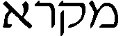) and Torah. Besides the "written" Torah, 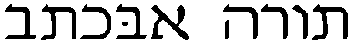, the Judaism which holds to tradition speaks of an "oral" Torah, 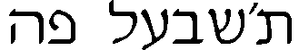, the commentaries and the ordinances which put into effect the laws contained in the Pentateuch. This oral Torah, it is claimed, was revealed to Moses and has been preserved in Israel by tradition (see TALMUD.)
The Torah relates the preparatory measures for and the establishment of the Old-Testament theocracy, and contains the institutions and laws in which this theocracy found its visible expression. The old Testament itself calls the entire work after its main contents (ha)tora or sefer (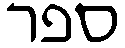), ha-tora, that is, "the book of the Torah", as in Nehemiah 8:2; to emphasize its Divine origin it is called torath Yahwe, sefer torath Yahwe (Ezra 7:10; 1 Chronicles 16:40; Nehemiah 8:8), and sefer torath Yahwe Elohim (II Esd. ix, 3); while sefer torath Moshe (Nehemiah 8:1), sefer Moshe (Ezra 6:18; Nehemiah 13:1; 2 Chronicles 25:4; 35:12) indicate its author. The Talmud and later Jewish writings call the Pentateuch sefer (ha) tora; the name is always used if the whole work were written as a scroll (megilla) for use in the Divine service. If the work is written in five scrolls or in book form it is called hamisha humeshe (ha)tora (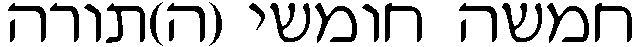), "the five- fifths of the law". This division into five parts is old, and in the time of Nehemias served as a model for the division of the Psalter into five books. The Jews generally named the individual books after the first word: (1) bereshith, 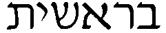; (2) shemath or we’elle shemoth, 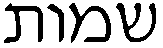 or 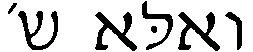; (3) wayyiqra, 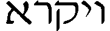; (4) bemidbar or wayyedabber, 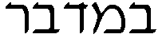, 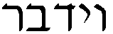; (5) debarim or ’elle ha-debarim, (cf. as early a writer as Origen on Psalm 1: Bresith, O’ualesmoth, O’uikra, ’Elle ‘addebarim). There are also names indicating the main contents of the books given to Leviticus, Numbers, and Deuteronomy: torah kohanim, 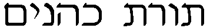, "law of the priests", for instance in "Meg.", iii, 6; homesh ha-piqqudim, , "the fifth of the numberings", as in "Yoma", vii, 1, mishne tora (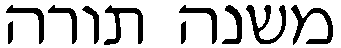), i.e., Deuteronomy, as in Masorah to Deuteronomy 17:18. On the other hand sefer yeçira, 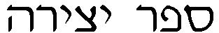, "book of the Creation", in Sanh., 62b, and neziqin,  , "injuries", Masorah to Genesis 24:8, are not to be applied, as is often done, to Genesis and Exodus; they refer only to the account of the Creation and to Exodus 21:22.
, "injuries", Masorah to Genesis 24:8, are not to be applied, as is often done, to Genesis and Exodus; they refer only to the account of the Creation and to Exodus 21:22.
Another method of division is that by which the paragraphs, or parashiyyoth (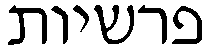, sing. 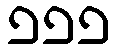), are indicated in the scrolls of the Torah used in the synagogues. In the older Midrashim these divisions are called parashiyyoth pethuhoth, 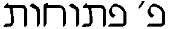, "open parashiyyoth"; or parashiyyoth sethumoth, 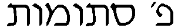, "closed parashiyyoth". In the former, the portion of the line following the last word is left blank; in the latter the termination of the paragraph is indicated by leaving only part of the line blank. Such paragraphs are called "small parashiyyoth" and they are generally indicated in the printed editions of the Bible by or 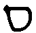. The Pentateuch has altogether 290 open and 379 closed parashiyyoth. In quoting they are generally called after main contents (as Baba bathra 14a: that is, Numbers 22:2-24:25), but sometimes after the first words (as Ta'anith iv, 3, the first six parashiyyoth of Genesis). The parashiyyoth are regarded as the arrangement of the divisions of the Pentateuch according to contents; but the basis of the distinction between open and closed parashiyyoth is not known with certainty.
Another division of the Torah is connected with the reading of lessons read in the synagogue on the Sabbath, a practice referred to in Acts 15:21, ’ek geneôn ’archaíon as being ancient (cf. also Josephus, "Contra Apion.", II, xvii). It was customary in Palestine to have a three years' cycle of these lessons (Meg., 29b); some writers say there was also a cycle of three years and a half. The Pentateuch, therefore, was divided into 154-175 sections or sedarim (, sing. 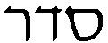). These sedarim though not indicated in our Bibles, are important for understanding the structure of the old Midrashim (cf. Büchler, "The Reading of the Law and Prophets in a Triennial Cycle" in "Jew. Quart. Rev.", V, 420 sqq., VI, 1 sqq., VIII, 528 sq.). In the course of time an annual cycle, which first acquired authority among the Babylonian Jews, and is now accepted by nearly all Jewish communities, was adopted. Maimonides (Hilhoth Tephilla, XIII, 1) calls it the prevailing custom of his era (twelfth century), but says that some read the Pentateuch in three years, which, according to Benjamin of Tudela, was the practice about 1170 among scattered communities in Egypt (cf. Jew. Quart. Rev., V, 420). In this one-year cycle the Pentateuch is divided into fifty-four Sabbath lessons generally called large parashiyyoth. A Jewish intercalary year consisting of thirteen lunar months contains fifty-three sabbaths, and the final section is always read on the day of the "joy of the Law" (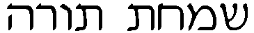), that is, the ninth day after the feast of booths (twenty-third day of Tishri). In ordinary years, when there are forty-seven sabbaths, two parashiyyoth are joined on each of seven sabbaths in order to complete the number. In Genesis there are twelve sabbath parashiyyoth, in Exodus eleven, in Leviticus and Numbers ten each, and in Deuteronomy eleven. They are named from and quoted by the first words. In the printed editions of the Bible they are indicated, as they are also the opening words the open or closed parashiyyoth, by or , with exception of the twelfth lesson, at the beginning of which (Genesis 47:28) only the breadth of a letter should remain blank. Concerning the distribution of the fifty-four parashiyyoth for the year, cf. Loeb, "Rev. des études juives", VI, 250 sqq.; Derenbourg, ibid., VII, 146 sqq.; Schmid, "Überverschiedene Einteilungen der hl. Schrift" (Graz, 1892), 4 sqq.
The Old Synagogue and the Talmud firmly maintain the Mosaic authorship of the Torah, but doubts are entertained regarding a number of passages. In "Baba bathra" 15e only the last eight verses of Deuteronomy, which speak of the death and burial of Moses, are assigned to another author. On the other hand Simeon (loc. cit.) teaches, referring to Deuteronomy 31:26, that these verses were also written by Moses under Divine direction (cf. also Josephus, "Antiq Jud.", IV, viii, 48). During the Middle Ages doubts were expressed as to the possibility of Moses writing certain sentences; for instance, by Rabbi Yishaq (to Genesis 36:11) who was opposed by Aben Ezra, and as well by Aben Ezra himself (to Genesis 12:6; Exodus 25:4; Deuteronomy 1:1; 31:22). Taken altogether, even in the succeeding period the belief in the Mosaic authorship remained undisputed, at least by the orthodox Jews. They hold, moreover, the Divine origin of the entire Torah, and the eighth of the thirteen articles of faith formulated by Maimonides and incorporated into the prayer-book reads: "I believe with full faith that the entire Torah as it is in our hands is the one which was given to our teacher Moses, to whom be peace." (See PENTATEUCH .)
APA citation. (1912). Torah. In The Catholic Encyclopedia. New York: Robert Appleton Company. Retrieved April 26, 2010 from New Advent: http://www.newadvent.org/cathen/14779c.htm
MLA citation. "Torah." The Catholic Encyclopedia. Vol. 14. New York: Robert Appleton Company, 1912. 26 Apr. 2010 <http://www.newadvent.org/cathen/14779c.htm>.
Transcription. This article was transcribed for New Advent by WGKofron. In memory of Fr. John Hilkert, Akron, Ohio — Fidelis servus et prudens, quem constituit Dominus super familiam suam.
Ecclesiastical approbation. Nihil Obstat. July 1, 1912. Remy Lafort, S.T.D., Censor. Imprimatur. +John Cardinal Farley, Archbishop of New York.
Contact information. The editor of New Advent is Kevin Knight. My email address is webmaster at newadvent.org. (To help fight spam, this address might change occasionally.) Regrettably, I can't reply to every letter, but I greatly appreciate your feedback — especially notifications about typographical errors and inappropriate ads.